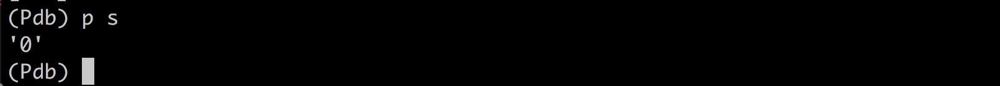

错误处理
try
try:
print("try...")
result=10/0
print("result 10/0=", result)
except Exception as e: #捕获所有的异常
# raise #raise 语句不带参数 就会把错误原样抛出
print("error+", e)
else:
print("no erro") #没有错误发生时 执行
finally:
print("finally...")
print("end...")
# try...
# error+ division by zero
# finally...
# end...
根据捕捉不用类型的错误
try:
print('try...')
r = 10 / int('a')
print('result:', r)
except ValueError as e: #如果int()函数发生错误
print('ValueError:', e)
except ZeroDivisionError as e: # 发现除数为0错误
print('ZeroDivisionError:', e)
finally:
print('finally...')
print('END')
Python的错误也是class,所有错误继承自BaseException，所以使用exception时可以捕获所有其子类错误
捕获错误可以跨越多层调用,
如果错误没有被捕获,就会一级一级往上抛出,最后被Python解释器捕获,打印错误信息并退出程序的执行
发生错误时可以通过分析错误的调用异常栈，定位错误的位置信息
抛出错误
自定义错误类，抛出错误，尽量使用内置的错误类型,只有在必要时才需要定义自己的错误类型
调试
断言
断言使用assert关键字
def my_func_div(s):
n=int(s)
assert n!=0, "n is zero"
return 10/n
my_func_div("0")
# AssertionError: n is zero
断言失败,assert语句会抛出AssertionError
Python解释器可以通过 添加参数- O 参数关闭所有assert 这时assert就可看做pass
logging
logging不会抛出错误，而且可以输出到文件
logging的另一个好处是通过简单的配置，一条语句可以同时输出到不同的地方，比如console和文件。
import logging
logging.basicConfig(level=logging.INFO)
s = '0'
n = int(s)
logging.info('n = %d' % n)
print(10 / n)
logging语句允许指定记录信息的级别,共有
debuginfowarningerror这几个级别,当我们指定level=INFO时，logging.debug就不起作用了。同理，指定level=WARNING后，debug和info就不起作用了。这样一来，你可以放心地输出不同级别的信息，也不用删除，最后统一控制输出哪个级别的信息。
pdb 单步调试
pdb是python解释器的调试器,可以让程序但不执行，可以随时查看运行的状态
s = '0'
n = int(s)
print(10 / n)
python -m pdb xxx.py


输入 l 查看diamante
n 单步执行代码
p 变量名 查看变量当前值
q 结束调试
pdb.set_trace() 断点
import pdb 在可能出错的地方放pdb.set_trace()就设置了一个断点,程序会在断点处进入pdb调试环境 可以用c继续执行